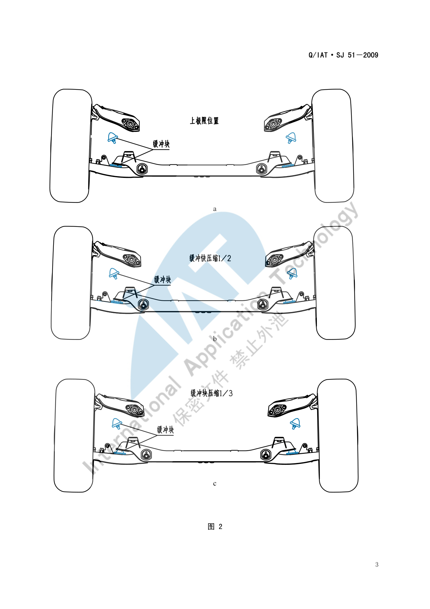

门板&立柱&顶棚校核标准¶
内容来源
本页正文抽取自《总布置》知识库中**可文本解析**的文件：
SJ 20-2008 立柱内饰板设计指导书、SJ 21-2008 前门内饰板设计指导书、
SJ 18-2008 顶篷设计指导书、SJ 19-2008 空气室盖板设计指导书、
SJ 4-2008 轿车车门主断面设计流程、SJ 51-2009 轮胎间隙校核规范、
SJ 54-2009 侧碰对应B柱断面系数设定指导书、SJ 9-2008 A类汽车眼椭球、头部包络面设计规范、
SJ 50-2009 仪表板装配设计指导书。
企业规范编号原样保留。
校核体系¶
flowchart LR
R["门板 立柱 顶棚<br/>校核体系"]
R --> A["间隙与面差"]
R --> B["装配工艺性"]
R --> C["头部空间与碰撞"]
A --> A1["饰板间紧配合 0.5-1.0mm"]
A --> A2["与玻璃 2.5-3mm"]
A --> A3["车门与门洞 大于8mm"]
A --> A4["顶篷与横梁 0 至 0.5mm"]
A --> A5["轮罩与轮胎包络"]
B --> B1["卡扣间距 200mm"]
B --> B2["主定位 0.3mm"]
B --> B3["装配顺序 顶棚先行"]
C --> C1["头部包络面 前99% 后95%"]
C --> C2["GB 11552 内部凸出物"]
C --> C3["GB 20071 侧面碰撞"]
C --> C4["B柱断面系数"]概述¶
要点¶
本区域的校核分三类，共同特点是**"软内饰 + 钣金 + 运动件"三层约束叠加**：
| 类别 | 判据来源 | 主要校核项 |
|---|---|---|
| 间隙与面差 | SJ 20/21/18/19/4 |
饰板间配合、与玻璃/密封条配合、与钣金间隙、面差 |
| 装配工艺性 | SJ 20/21/18/19/50 |
卡扣间距、定位方案、安装顺序、工具空间、拔模 |
| 头部空间与碰撞 | SJ 9/18/54、GB 11552/GB 20071 |
头部包络面间隙、内部凸出物、侧面碰撞、B 柱断面系数 |
统一的设计顺序：内饰类零件均为 "查定义、做边界、核人机、定结构、细化 3D / 工艺分析细化 3D"。
示例¶
三类校核在同一张断面上交汇。以顶篷与侧围边梁处为例：这里同时要满足**侧碰间隙（≥ 25 mm 或气帘 > 3 mm）**、立柱饰板压顶棚过盈 1 mm、顶篷搭接长度 > 8 mm 三项来自不同规范的要求。
注意事项¶
- 校核必须区分"可视区"与"非可视区"：已解析条款中大量采用"外观间隙"（如中控面板 0.5 mm）与"内部间隙"（如顶篷无安装结构处 > 3 mm）两套标准，但**未给出统一的 DTS 分级表**，属待补充项；
- 所有间隙都是**静态设计值**，必须另行校核**极限状态**（车门下沉、座椅全行程、遮阳板全翻转）。
间隙与面差¶
要点¶
（1）立柱内饰板（SJ 20-2008 §5.4）
| 校核项 | 要求 |
|---|---|
| 立柱上、下内饰板**紧配合** | 表面间隙 0.5 mm–1.0 mm |
| 立柱上、下内饰板**搭接配合** | 阶差 1 mm，搭接长度 > 20 mm |
| 与**门槛踏板**紧配合 | 表面间隙 0.5 mm–1.0 mm；搭接配合时阶差 1 mm、搭接长度 > 20 mm |
| 与**顶棚**紧配合 | 过盈量 0.5 mm–1.0 mm |
| 与**地毯** | 一般过盈量 1.0 mm–2.0 mm；地毯**长出立柱 10 mm** |
| 与**玻璃** | 间隙 2.5 mm–3 mm |
| 与**座椅**的运动间隙 | > 40 mm |
| 与**安全带**的运动间隙 | > 5 mm |
| 与**电器开关**表面 | 间隙 2 mm |
| A 柱上内饰板与 IP | 配合间隙 0.5 mm |
| A 柱下饰板与发罩扣手 | 表面间隙 2 mm |
| 与密封条周边 | 间隙合适、配合合理（需逐项确认） |
（2）前门内饰板（SJ 21-2008 §5.4）
| 校核项 | 要求 |
|---|---|
| 与 IP | 配合间隙一般 > 6 mm，配合宽度 > 8 mm，内部无配合区 10 mm 以上 |
| 与**门槛踏板（压板）** | 一般 8 mm（考虑车门安装后有下沉趋势） |
| 与前立柱及中立柱**密封条** | 一般 7 mm–8 mm；若前/中立柱为半包结构同样 7 mm–8 mm |
| 门内饰与车门钣金接触的配合翻边与**密封泡**之间 | ≥ 5 mm |
| 与**座椅靠背**运动间隙 | > 20 mm |
| 与**坐垫总成机构**运动间隙 | > 40 mm |
| 与**门内板**配合周边 | 一般**要求零接触**，边界过渡均匀、无安装阻碍 |
| 与**门内水切** | 配合边界正确：覆盖长度合适、间隙适度、干涉合理、结构可行 |
| 与**后门内饰板** | 需协调统一（可通用件如内开启结构总成、拉手盒、饰盖、标准件） |
（3）顶篷（SJ 18-2008 §5.3）
| 校核项 | 要求 |
|---|---|
| 与玻璃（前后风挡、角窗等） | 2.5 mm–3.0 mm，要求均匀一致 |
| 与玻璃黑区 | H > 2 mm、L > 5 mm |
| 与风窗止口边 | ≤ 3 mm |
| 与密封条（有"翅膀"） | 距密封条本体 2 mm 左右；"翅膀"覆盖顶棚 > 5 mm；A 值 1.5–2 mm；C 值 1.0–1.5 mm |
| 与密封条（无"翅膀"） | 0 接触，但与圆角区距离 ≥ 2 mm |
| 与顶盖横梁 | 有安装结构处 0 mm ~ −0.5 mm；无安装结构处 > 3 mm |
| 与侧围边梁 | 不加装：8 mm–15 mm；考虑侧碰：≥ 25 mm；加气帘：> 3 mm；塑料护板：0 mm；泡沫块：0 mm |
| 与立柱 | 顶篷与立柱间隙 1 mm、面差 0 mm、翻边 > 8 mm；立柱饰板压顶棚**过盈 1 mm**、盖住顶篷 ≥ 8 mm |
| 与内拉手 | 手部开启空间 ≥ 5 mm；固定处与钣金 0 mm；拉手干涉顶篷 1 mm–1.5 mm；开孔保证安装座搭接顶篷 约 4 mm |
| 与顶灯 | 顶灯干涉顶篷 1 mm；开孔保证灯搭接顶篷 ≥ 8 mm |
| 与遮阳板 | 前端配合 0 mm；后端旋转中心到顶篷距离 > 旋转半径 + 2 mm；手部开启空间 ≥ 16 mm（视相对高度）；支座凹台周圈间隙 5 mm–8 mm；支座干涉顶篷外表面 1 mm–1.5 mm；凹台外表面与横梁/支架 0 mm；开孔保证支架搭接顶篷 约 5 mm |
| 与高位刹车灯 | 配合间隙 ≥ 5 mm；加塑料护板时护板干涉顶篷 1 mm、开孔保证搭接 ≥ 8 mm |
| 与天窗（翻边配合） | 翻边侧面距天窗 3 mm；翻边顶部 ≥ 6 mm；翻边高度 ≥ 15 mm（不足时优先保高度，顶部距离不低于 3 mm）；粘扣处间隙 ≥ 8 mm |
| 与天窗（密封条配合） | **零接触**或按密封条形式定（示例 2 mm）；其他部位 ≥ 3 mm（特殊局部 2 mm） |
| 与出水管、线束、电器元件 | 一般 ≥ 3 mm；特殊情况下出水管/线束局部 1 mm（不干涉即可）、电器元件局部 2 mm |
（4）车门与门洞（SJ 4-2008）
| 校核项 | 要求 |
|---|---|
| 前门门框与 B 柱、后门门框与 B 柱的**所有间隙** | > 8 mm |
| 后门**开度** | 60°–70° |
| 后门开启过程中（与前后门之间、与铰链体、与 B 柱） | > 3 mm |
| 门洞密封条与门护板距离 | > 6 mm |
| 前门下边缘线与侧围门槛线间隙 | 5 mm–8 mm |
| 前门门框与侧围门洞周边间隙 | > 8 mm |
| 侧围门洞法兰面宽度 | 15 mm–18 mm |
| 侧围门洞法兰面与车门密封面距离 | 12 mm–16 mm |
| 板金件内外板边缘线落差 L1 | 1 mm |
| 门洞法兰面圆角 R1 | 3 mm–6 mm |
| B 柱侧面斜角 α | > 4° |
| 车门内板铰链/锁体安装面与 YZ 平面 | 成 **3° 以上**角度 |
| 门洞密封条安装槽侧壁与法兰面边缘线间隙 | 1 mm–1.5 mm |
（5）空气室盖板（SJ 19-2008 §5.4）
| 校核项 | 要求 |
|---|---|
| 与发动机罩运动间隙 | ≥ 5 mm |
| 与发动机罩铰链运动间隙 | ≥ 6 mm |
| 与翼子板、侧围外板 | 0 mm–2 mm |
| 与前风挡玻璃 | 一般**过盈 1 mm** |
| 与雨刮旋转轴、雨刮摇臂运动间隙 | ≥ 5 mm |
| 与雨刮电机安全间隙 | ≥ 5 mm |
| 前方视野 | 不能高于前方下视野 |
（6）轮罩与轮胎（SJ 51-2009）
轮胎跳动校核的输入条件（所有数据要求在整车坐标下）：轮胎上下跳行程参数与转向器行程参数；所用轮胎的**标准胎、最大胎**数据（底盘无法提供准确最大胎断面时参考附录绘制，有防滑链要求时考虑防滑链尺寸）；车身相关数据（车身纵梁、轮罩、翼子板、挡泥板等轮胎周边数据）；前后悬架运动分析数据。
包络面制作工况：
| 悬架形式 | 工况设置 |
|---|---|
| 独立前悬架（4 工况） | ① 转向角 0°、车轮下极限到上极限；② 转向角 10°、上跳至上极限；③ 转向角 20°、上跳至缓冲块压缩 ½；④ 全转向、上跳至缓冲块压缩 ⅓ |
| 非独立前悬架（4 工况） | ① 0°、下极限到上极限；② 0°、一侧车轮跳动至轴线翘起 5°；③ 全转向、下极限到上极限；④ 全转向、一侧车轮跳动至轴线翘起 5° |
| 独立后悬架 | 车轮从下极限运动到上极限 |
| 非独立后悬架（3 工况） | ① 两侧车轮同时跳动从下极限至上极限；② 一侧在设计位置、另一侧上跳至上极限；③ 一侧跳至上极限使后轴翘起 5°（备选） |
方法依据：SAE J1214 JAN1992 Tire To Body Clearance Check For Recreational Vehicles；轮胎与轮辋标准：GB/T 2978-2008、GB/T 3487-2005。
示例¶
前轮包络面的工况定义（a/b/c 三种车轮位置）直接决定了轮罩与翼子板的边界：

注意事项¶
- 可视区与非可视区的标准差异**在本区域尤为明显：门内饰与 IP 的"配合间隙 > 6 mm"、与门槛的 8 mm 属可视区；而顶篷"无安装结构处 > 3 mm"、出水管"局部 1 mm"属非可视区。已解析条款**未给出统一的 DTS 分级表，属待补充项。
- 公差累积：内饰件的间隙值多数在 0.5–2 mm 量级，而钣金单件公差往往同量级，因此必须做**极限状态校核**（车门下沉、座椅全行程、遮阳板全翻、卡扣活动余量），不能只比对标称值。
装配工艺性¶
要点¶
（1）装配顺序（SJ 50-2009 §3.1）
装饰件装配顺序：顶棚系统 → 铺设地毯 → 驾驶舱模块（含仪表板组件）→ 前风挡玻璃 → 立柱、护板等内饰件 → 座椅固定在地板上 → 其他部件。
（2）固定与定位（SJ 20-2008 §6.2、SJ 18-2008 §6.2）
| 校核项 | 要求 |
|---|---|
| 立柱饰板固定方式 | 一般塑料卡扣，局部可用螺钉 |
| 卡扣固定间距 | 一般 200 mm 左右，均匀布置 |
| 滑块空间 | 卡扣座外部要留出**大于卡扣座内部深度 2 倍以上**的距离作为滑块滑动空间 |
| 立柱饰板主定位 | 一个主定位控制 X、Z 方向，高度方向一般靠近配合边；开孔与定位卡扣处间隙 0.3 mm |
| 立柱饰板辅助定位 | 一个辅助定位控制 X 方向，非限位方向间隙 1.0 mm–2.0 mm |
| 窄长饰板 | 纵向只能布置一排固定点且无限制旋转部件时，需设计**限位加强筋**与钣金配合限制旋转 |
| 顶篷安装点 | 布置在顶盖横梁或钣金支架上，每个横梁 1～2 个，均匀且左右对称 |
| 顶篷第一根横梁 | 已安装遮阳板和前顶灯，一般**不需布置**安装点 |
| 顶篷最后一根横梁 | 一般 3～4 个；有高位刹车灯配合时一般 2 个 |
| 顶篷天窗车型 | 后阅读灯布置到横梁位置时，横梁上一般**不再布置**安装点 |
| 顶篷主定位 | 控制 X、Y 方向，半径差 0.3 mm；一般为最后排安装孔（优先中间的孔） |
| 顶篷副定位 | 控制 Y 方向，X 向半径差 1.5 mm–2 mm、Y 向 0.3 mm；一般为最前排安装孔、与主定位同侧 |
| 顶篷非定位孔 | 直径差 1.5 mm–2 mm |
（3）装配可行性（SJ 21-2008、SJ 20-2008、SJ 19-2008）
| 校核项 | 要求 |
|---|---|
| 门内饰与门内板 | 配合周边**一般要求零接触**，边界过渡均匀、无安装阻碍 |
| 内开启扣手 | 零件的分块需考虑现场的装配工艺，如**内开启扣手的安装顺序** |
| 安全带 | 零件的分块需考虑现场工装要求，例如**安全带的装配** |
| 空气室盖板 | 分块后要进行**安装模拟**以验证是否满足装卸要求；整体式安装顺序为：先打开发动机罩，顺着前风挡玻璃放下，先把上沿与前风挡玻璃安装好，再把两端与翼子板安装好 |
| 顶篷 | 需进行安装模拟，使其安装和拆卸都可实现 |
（4）工艺性要求
| 零件 | 拔模要求 | 其他 |
|---|---|---|
| 立柱内饰板 | 沿拔模方向 > 5°，特殊最小 3°，深皮纹 > 7° | 加强筋厚度避免缩痕；卡扣座处滑块滑动距离需与供应商确认 |
| 前门内饰板 | Y 向 > 5°，特殊最小 3°，深皮纹 > 7° | 包布工艺：整体式包布**槽深 > 10 mm**（当前国内工艺水平）；分开式包布**配合边重合宽度 ≥ 15 mm** |
| 顶篷 | Z 向 3°–5° | 顶篷长度过大模具不能实现时考虑分块 |
| 空气室盖板 | > 5°，特殊最小 3° | 加强筋根部厚度**不超过本体厚度的 ⅓ 左右**（避免缩痕） |
示例¶
装配顺序会**反向决定分块方案**：先装顶棚、地毯，意味着立柱下饰板与门槛饰板必须能"后装且不遮挡前装件"；而"仪表板总成后装座椅"则意味着地毯必须预留座椅安装点的让位。
注意事项¶
- 售后拆装便利性属待人工补充项：已解析条款覆盖的是**生产线装配**（工时、可达性、安装顺序），未见售后维修拆装（如单独更换某一饰板是否需要拆卸其他总成）的要求；
- 卡扣可达性是隐性的硬约束：
SJ 20-2008要求卡扣座外部留出大于内部深度 2 倍的空间，这在窄小的立柱饰板上经常无法满足，需在数据阶段就与工装部门确认。
头部空间与碰撞¶
要点¶
（1）头部空间（SJ 9-2008、SJ 18-2008 §5.2.1）
| 空间项 | 定义与要求 |
|---|---|
| 前乘客区头部空间 | 顶篷距 99% 百分位人体头部包络线的**最小距离** |
| 后乘客区头部空间 | 顶篷距 95% 百分位人体头部包络线的**最小距离** |
| 前/后乘客区乘坐空间 | 过 H 点作与 zx 面平行的平面，过 H 点作与竖直方向成 8° 的直线，其与顶篷交点到 H 点的距离 |
| W27 | 头部包络面在**斜向 30°** 方向上与内饰的间隙 |
| W35 | 头部包络面与内饰的**水平**间隙 |
| H35 | 头部包络面与内饰的**垂直**间隙 |
| H61 | 有效头部空间 |
头部包络面的轴长、中心点定位公式与百分位选用规则见 空间与进出便利性。
（2）内部凸出物（GB 11552-1999《轿车内部凸出物》，等效 74/60/EEC、78/632/EEC）
| 判据 | 内容 |
|---|---|
| 尖棱 | 曲率半径 < 2.5 mm 的刚性材料棱边；不包括**从仪表板/内饰表面测量**凸出高度小于 3.2 mm 的构件 |
| 圆钝例外 | 凸出物的**凸出高度不大于其宽度的一半且边缘圆钝**时，可不规定最小曲率半径 |
| 格栅类零件 | 需满足格栅间距与最小片厚/半径的对应关系表（见 IP 布置） |
| 适用范围 | 立柱内饰板（SJ 20 §3.1）、顶篷（SJ 18 §3.1）、前门内饰板（SJ 21 §3.1）均须满足 |
此外，SJ 46-2009 §6.16 要求乘员侧断面**在头部碰撞基准区内**满足 GB 11552-1999 对应要求。
（3）侧面碰撞（GB 20071-2006、ECE R95、SJ 54-2009）
| 项目 | 内容 |
|---|---|
| 试验条件 | 可变形移动障碍壁（MDB），950 kg，50 km/h，撞击角 90°，假人 EuroSID-1 或 EuroSID-2 |
| B 柱断面系数 | 按概念设计阶段的简化力学模型计算各位置最小断面系数 ZLWR、ZUPR，要求 B 柱各处断面系数位于**最小断面系数要求线右侧** |
| 立柱饰板碰撞要求 | 门内饰板的设计空间及结构应在碰撞时**对乘员的伤害降到最小**（SJ 21-2008 §3.3） |
| 碰撞保护块 | 根据总布置及 CAE 分析结果布置位置与大小尺寸，最小厚度 30 mm 以上，平面大小覆盖 CAE 要求的保护区域（SJ 21-2008 §5.2.9） |
| 侧碰相关的顶篷结构 | 考虑侧碰时顶篷与侧围边梁间隙 ≥ 25 mm；加装气帘时理想间隙 > 3 mm（SJ 18-2008 §5.3.4） |
示例¶
侧碰对内饰板的反向要求非常具体：碰撞保护块最小厚度 30 mm 以上，且平面尺寸必须**覆盖 CAE 要求的保护区域**。这意味着内饰板在该区域不能为了造型而减薄，SJ 21-2008 §5.1.9 也要求在定义阶段就确认"是否要满足侧碰要求，如果有，要考虑对人体的保护及饰板与钣金的距离"。
注意事项¶
- 法规与五星目标的差异属待人工补充项：已解析条款覆盖的是**法规符合性**（GB 11552、GB 20071），未见 C-NCAP 五星目标的**加分项**要求。
可参考的对标信息：
SJ 54-2009指出丰田 COROLLA 因断面系数远高于 GB 20071-2006 最低要求（预留了足够安全余量），在 C-NCAP 取得**侧碰 16 分满分、整车 5 星**成绩——说明"法规合格 ≠ 五星"，需按目标星级预留余量。 - 头部空间在**带天窗车型**上会被显著压缩（
SJ 9-2008附录 A 实测：天窗版 W35 仅 18 mm，非天窗版 47–76 mm），碰撞与顶篷结构件（气帘、加强板）都会进一步挤占该空间，三者需联合校核。
待人工补充¶
本页待人工补充清单
- DTS（尺寸技术规范）分级表：可视区/非可视区的统一间隙与面差标准；
- **售后拆装便利性**要求：本页仅覆盖生产线装配；
- **C-NCAP 五星目标**相对法规的加分项与余量要求；
- **车门淋雨试验**判据与失败模式；**内饰异响**判据；
SJ 3-2008 车门设计检查指导书（62 页）已下载但尚未逐条解析，其中含**车门设计检查清单**， 是本页"间隙与面差"的重要补充来源；SJ 45-2009 内饰SEG设计指导书（25 页）、SJ 22-2008 三厢车内饰零部件装配流程已下载但未展开；- 知识库中以下文件虽相关但因读取问题**未采用**：
AEM-A1-900 检查和维护性设计规范、AEM-A3-001 装配维修性、AEM-A4-003 内部凸出物校核规范。
建议：在 IMA 客户端中打开对应文件补充条款，或按"规范编号 + 页码"方式人工引用。